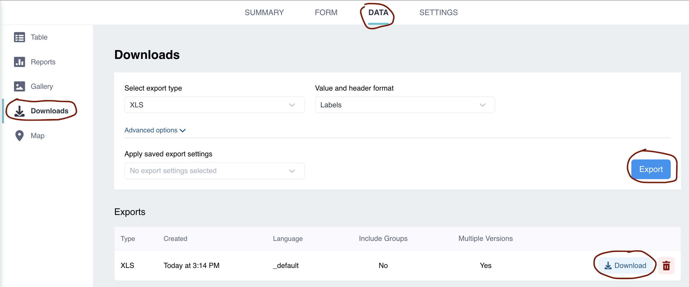

Introduction
This user manual provides guidance on how to use the Trinity United Method Church (TUMC) Outreach Database. This document is only for internal use.
TUMC Database system provides user interface (UI) to enter data from distributions, distribution appointments, ESOL attendance entry and such into the database and also view those data when needed.
Outreach team and volunteers - who help with the distribution are the users of this system.
To access the Database system, you’ll need internet connection, a modern web browser (e.g. Chrome, Safari), and mostly a username/password to log-in.
Getting Started
In this section we will cover how to log-in, user types/roles, overview of user interface and so on. We have task based (How to…) and Q&A sections too.
How to Log-in/out
Click on this link to redirect you to the right log-in page. There are other variations of this system which seem quite similar, but that link takes you to the right page.
Enter your username and password and hit the big blue button
The system may log you out when you close your browser page, but to be sure, you can navigate the far top-right corner of your interface, click on the avatar (circle icon), click on the “Logout” button (the last one).
If you forgot your password, it’s recommended to consult with the Admin first. Since all accounts use the same email address for resetting the password, Admin would be able to get it reset.
In the log-in page, you have the option to create an account for yourself, but that doesn’t mean you can access the TUMC Outreach data.
User Roles
At the time of writing this manual, there are three different user roles/types
- Admin: is a super user and has all the permissions to do anything with the database. If you see you can’t do something, it means that’s restricted for data security purposes.
- Data management user: this type of user can enter, edit and delete records, but can not do project management (e.g. Edna’s account).
- Data entry user: this user is authorized only to enter, edit and view the data/records (e.g. *_entry account)
Interface overview
In this section we explore different parts of the database interface.
After you’ve logged in, on the far top-right corner of the page, you’ll a circle icon, when you click on it, it’ll tell what’s your username and what email your account is bound to. While you can click on the “Account Settings” and change some fields - but it’s not recommended to do it, if you feel something needs to be changed, please consult with Admin.
On the left side bar you’ll see a few options, but the one you’ll need to use is the “Deployed”. It means deployed projects/forms. When you click on it, it’ll show which forms you have access to. The form names are indicative of what they are for. Click on the one you need to work on. If it happens that you don’t see the “Deployed” option, click on the check-list icon (on the left side of big blue button).
While you’ve access to creating new form (Blue button with “NEW” text on it), but you don’t need to create and it won’t be used. That’s what admin will deal with. The Draft, means drafted projects are there, and same for Archived, archived projects live there - but you don’t need to bother yourself with them :). Admin user can use the “NEW” button to initiate a new project/form, it’ll ask to upload either build or upload a form. For further details, please visit KOBO’s official documentation here.
SUMMARY: when you click on a form, it’ll take you to a more busier page where you can see the information about the form, like last time the form was updated, or who owns/control the form, or a graphical summary of data collection. On the right side of the page, there are some buttons, but they are just for easy to access, we will explore them in their own section.
FORM: this is where you can open a form to start data entry, update/replace the form or deploy. If you update or deploy the form you should have trained to do so and here’s a link to detailed documentation. For data entry purposes, click on the “Open” button in the lower-right side of the page, it’ll take you to the data entry form. You might be asked to enter your username and password, if so, use your username and password that you used to log-in to the system.
The data entry form is explained in Data Entry Form section below.
DATA: under this tab, you can view and manage (if you’re authorized) the data. Below, we explore each feature in detail:
Table: it’s at the top of the side bar. This is the default view, where you can see the data in a tabular format. There’s a search bar for every column, use that to search for your desired record. There’s also a drop down where you can sort, hide or freeze a column - this might not be visible for all users.
- Check icon: if you see this icon, that’s for bulk edit or delete. Select single or multiple columns and you’ll have some options displayed at the top of the table, where you can edit or delete all the selected rows. There’s a another Check icon at the table header level, if you check that, it’ll apply the action (edit/delete) on all of the records in that page.
- Eye icon: it lets you to view each record individually in a long format with detailed column labels.
- Pen icon: it lets you to edit a record. This might not be visible for all users.
Reports: this feature is not useful in our case. But it provides a basic summary stats about the table.
Gallery: same as report, not useful in our case. If we’d collect images, this would be helpful.
Downloads: this is where you can download the data into different formats such as csv, excel and etc. Some useful options here:
- Export type: choose the format you want to download the data. Excel would be the most useful format in our case.
- Vale and header format: if you want long descriptive labels as column name in downloaded data, so choose “Labels”, the default is short names.
- Under “Advanced options”: most of the time the default option works, but one useful feature is to select specific columns (questions) to be exported. For example you might need only first name and last name wit id, so you can choose only.
- Export: after you have chosen your preference for the downloaded file, click on the “Export” button, it’ll take a few seconds and create your downloadable in the table underneath it.
- Download: lets you download the exported data. If you just exported, your downloadable file is the very top record, so click on the “Download” button and it’ll store it on your computer.
Map: since we’re not collecting spatial data (GPS points) this is not useful in our case.
SETTINGS: this is the project settings, so mostly for admin uses only - and it might be disabled to unauthorized users. Admin can share a project with a user from settings tab or change the existing sharing setting. Other menu items are not covered in this manual, but can be found here.
Sharing: this page lets you to share the current form with other users. click on the “Add user” button, it’ll let you to type in the username and assign the permission.
WarningPlease do not share the projects unless you’re sure of username and confident that you know what you’re doing - you might share the personal information with someone accidentally.
Also, never give “Delete” or “Manage project” permission to any user other than the admin.
Edit or remove the existing sharing setting: click on the pen icon to update the permission. Or click on the trash icon to remove accessibility for that user for the current project/form.
You can allow submissions to the form without username and password. This is not recommended, but if we plan to let self-sign up (specifically for Tuesdays distribution), this will be needed. By switching on the toggle, the form will be accessible by a link to everyone.
Also, the form can be shared publicly - which MUST NOT be. But in certain cases you might need to share the form temporarily with someone, so use these options to do so. For example, for printing ESOL name tags, we need turn on the “Anyone can view submissions made to this form” temporarily, but it needs to be turned off right after the print is done.
Data Entry Form
Data entry is one of the most used feature if this system. We use it to enter data from distributions, appointments, ESOL attendance and so on. Following, we’ll cover some potential behaviors that might face with:
Login: If it’s your first time doing data entry, you’ll be asked to enter your username and password. use your KOBO username/password to login. If you trust on the device, I’d recommend to save the username and password (if you’re asked to save), so next time you won’t need to log-in again.
Unsaved Record Found: If you previously used a form to enter data and left the page without submitting it, you most likely will be asked to either DISCARD or LOAD RECORD. The former one will start a new form. The latter one will reload the previous data and resume data entry where you left off.
A new version available: you may see an orange box at the top of the page that notifies about an updated form. If that happens, it’s recommended to refresh the page, and you’ll have the update in the form. Once the forms are stable, this may not happen.
Draft/Submit: you’ve the option to save your date temporarily and resume later by clicking on the “Save Draft” button. If you’re done entering the data, click on “Submit” button to submit the data to the database.
Offline data collection: this form works perfectly fine collecting data when you don’t have internet, once the internet connection is detected, it’ll submit the saved data by itself.
Task Based Sections
How to find the ID of a Guest
Steps:
- Navigate to the Guest Registration form, click on the DATA tab
- Type in the name or last of the guest in the guest_fname, guest_lname search box respectively
- You might get multiple guest, but choose the one you want
- Double click/tap on the Guest ID column and copy it
Type in the name/last name quickly, the table view starts filtering after a second pause
How to register a guest
After you’ve logged in
- click on the “Deployed” button on the left side bar
- Click on “Guest Registration Form”
- Click on the “FROM” tab located on the top menu
- Click on the “Open” button on the right side of the second section of the page
- For full details check out Interface overview, FORM bullet point
Since you’re already here, click on this link and it’ll take you to the data entry form
How to record/enter a distribution
Same as How to register a guest section, just in the second item, click on the “Distribution Form”.
You need to start the entry by entering the Guest ID. If the guest doesn’t know their ID, you need to go to the Guest Registration Form and find their ID by searching their name or last name. See How to find the ID of a Guest.
How to make an appointment
Same as How to register a guest section, just in the second item, click on the “Appointments Form”.
You need to start the entry by entering the Guest ID. If the guest doesn’t know their ID, you need to go to the Guest Registration Form and find their ID by searching their name or last name. See How to find the ID of a Guest.
How to enter volunteer availability
Same as How to register a guest section, just in the second item, click on the “Volunteers Availability Form”. Please keep the following in mind:
You need to use the same email address as the one you used for volunteer registration
You won’t be able to have overlapping shift. For example, if you signed up for Thursday Market (10:00-2:00) from 08/01/2025 to 08/15/2025, you may not be able to record another availability at the same shift between those dates. The system should notify these type of conflicts.
Reach out to admin if you need to update any information or availability
How to edit a record
If you need edit a record, make sure the account you’re using has the right permission to edit. You can edit in two different ways:
Individual record - all fields: Go to the desired form, click on the DATA tab, in the table view, every record has a pen icon in the first column, click on it, it’ll take you to a new window where you can edit any field for the selected row, and submit the update.
Multiple records - one field at a time (you may rarely need to edit this way): Go to the desired form, click on the DATA tab, in the table view, each record has check box in the first column, find your target records and then:
Check those records you want to edit, once you check, edit option will appear at the top of the table

Click on the “Edit” button at the top of the table, it’ll take you to a new window where you can choose what field to edit, choose desired field by clicking on the “Edit” button in this window
Now, you’ll be in a different window, where you have an open field to enter new response for the selected rows and click “Save” to save your changes
Please keep in mind that the second option (Multiple record edit) will update all those selected rows - so make sure you’re selecting the right rows and doing it purposefully.
How to safely delete a record
Delete permission is granted only for certain users, when you need to delete a record, first make sure your account has that permission. Note that the delete action IS NOT REVERSABLE! Go to DATA tab, in the table view, find your target record and check the check box, this will make the “Delete” button appear at the top of the table, once you’re sure you’ve checked the right rows, then hit the “Delete” button, it’ll ask you to confirm that you intentionally delete rows, confirm and it’ll be done.
How to download data
Choose the right project (e.g. Guest, Distribution, etc.) then click on the DATA tab, then on the left panel, click on the Downloads, then click Export - it’ll generate a downloadable file in the table below it, then click on the Download button. You should have the data into you Downloads folder.

For more details, please read Interface overview, DATA bullet.
Read Data Protection policy on how to keep the data and account safe.
If you’re downloading the data into your personal device, we highly recommend to remove the entire data when you’re finished working with it, or at least remove the personal identifiable columns.
How to view complete individual record
Beside looking at the data in wide (row-wise) format, you can look at each individual record in long-wide format too. Go to DATA tab, in the table view, first column, there is eye icon for each row, click on it and you’ll be taken into a new window where you can see the details of a record completely in long-wide format. This is particularly helpful if you want to know the label of each column.
Troubleshooting / FAQs
Duplicate names
There’s chance we’ve duplicate records (by first and last names), but their IDs won’t be the same. If you need to grab a guest with such duplicate issue, it’s recommended to use the ID of the record that has the most data (e.g. their household size is available, or their address is complete)
Why the booked time slots are not blocked
The system has a 5 minutes delay to access the data after it’s entered. If you just entered an appointment and the system doesn’t show it on the corresponding time slot, you may check back in 5 minutes, also you have to update/refresh your page too to see the update.
Why first name/last name columns are blank in the appointment or distribution forms
Same as above; if you registered a guest in less than 5 minutes ago, and now trying to make an appointment or record a distribution for them, you won’t see their name pops up, and the name columns will be empty in the resulting form. There two ways to fix it:
- If you just registered a guest, wait at least 5 minutes to schedule an appointment or record a distribution for that guest (after 5 minutes, you’ll have to refresh your page to get the get new guest data loaded)
- If it’s a distribution, go to the guest table and note down the guest ID, then record a distribution by entering that noted guest ID and submit the form - you’ll see a reminder that says “Guest not found …” you can ignore that if you’re sure about guest ID. It’ll insert a record without those information, but later you can edit that form (by clicking on the pen icon in the table view), it’ll pull those information and update it.
Why a registered guest is not found in other forms
There’s a 5 minutes delay the newly entered data to become accessible throughout other forms. If you just registered a guest, and you can find it in the Guest Table, but their ID doesn’t get recognized in the other forms (e.g. Distribution, Appointments), you need to give the system at least 5 minutes to load that data - and also, need to refresh your page after 5 minutes.
Why I can’t see a form/table
If you don’t see a table, form or project, it could be because of any of the following reasons:
The project is not shared with you
You’re not logged in - especially if you see a “Login” button on the top left side of your page. Database system may log you out after sometime with no activity
Make sure you’re logged in with right user account/username
Follow the instructions in Interface overview section
Why a tab is disabled
If a tab (e.g. SETTINGS) shows as disabled (un-clickable), it means you don’t have the permission to access the content under that tab. Make sure you’re logged in with the right user account. Reach out to Admin if the issue is something else.
What could happen if I delete something
- Deleting a record: Unfortunately, delete action is not reversible in this system. So please put extra care when you want to delete something. Even if you’ve the permission to delete, it’s recommended to ask Admin to do it.
- Deleting a form: …
Record queued for submission
When you do data entry, it may happen to see messages like “Record queued for submission”. That means the form is working and capturing your data but due internet connection issue it can’t submit but queue instead, once the connection is available, it’ll send them to the database. There’s nothing to worry about this.
Data Protection
This database contains personal identifiable information, whoever granted access must be cautious keeping the credentials safe and avoid downloading the data into their private devices. We do not recommend saving the username/password in personal devices. Please communicate immediately with Outreach Leadership if you feel log-in username/password is leaked.
Account responsibilities
To maintain data security and accessibility, we’ve multiple kobo accounts with different accessibility levels. If you’re given a username/password to log-in, you’re responsible keeping it safe. Some account may not be able to delete a record, but still able to download and view identifiable information, so please put extra attention keeping the account credentials safe.
Why Guest not found
There could be multiple issues:
Make sure Guest is registered in the Guest table and you’re able to find them there
If you can find Guest in the Guest table, but they system can’t pull their information in the other forms like Distribution or Appointments, there could be a few issues:
Whether you just registered the Guest, and the system needs 5 minutes to sync up
If you’re sure 5 minutes is already over, then you need to refresh you browser page
If non of above, make sure the ID field doesn’t contain any space either before or after the ID
Glossary
KOBO: The Database system name
Project: all features (form, table, summary and etc.) belonging to a specific schema like Guest, Distribution.
Admin: who maintains the database
Contact / Support Info
Mary Liz - Outreach Director, Forever Admin :)
Email:
Phone:
Edna - Position
Email:
Phone:
Jen - Position
Email:
Phone:
Amin - Developer, Temporary Admin:
- Email: